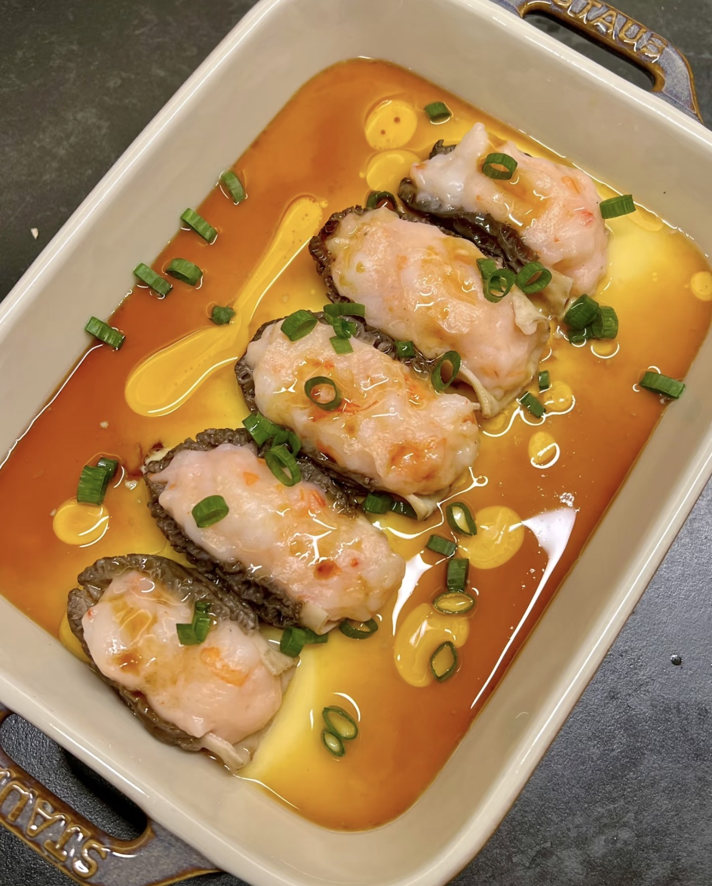

Morel Shrimp Steamed Egg
虾滑羊肚菌蒸蛋 — Silky steamed egg topped with shrimp paste and morel mushrooms.
Ingredients
- Eggs (3)
- Warm water (1.5x egg volume)
- Morel mushrooms
- Shrimp paste
- Salt
- Scallions
- Steamed fish soy sauce
- Cooking oil
Directions
- Soak morel mushrooms in warm water until soft.
- Beat eggs and mix with salt and warm water.
- Strain the mixture for a smooth texture.
- Pour into a bowl and steam over low heat for 5 minutes.
- Fill morels with shrimp paste.
- Place on semi-set egg custard.
- Steam for another 3–5 minutes.
- Top with scallions.
- Drizzle hot oil and steamed fish soy sauce.
- Serve immediately.